Interactive Tools¶
← Back to the README · API: API_INTERACTIVE.md
Cards that ask players to choose or vote, and on-canvas tools to pick, place, and move tokens and zones. Automations and macros call these. The function signatures are in API_INTERACTIVE.md.
Choice cards¶
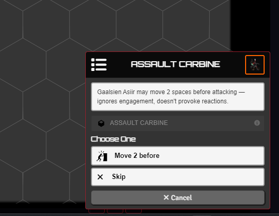
A choice card pauses and waits for a player to pick. startChoiceCard has four modes:
- OR - pick one option, the card closes.
- AND - every option must be clicked. Each runs as soon as it's confirmed.
- Vote and Hidden Vote - the card is broadcast to its recipients. You watch a live tally and click Confirm to resolve (hidden keeps votes secret until then, ties are broken by you).
userIdControl routes a card to one player or a list (first to respond wins). A non-interactive waiting card (startWaitCard) shows "waiting for X" in the meantime.
openChoiceMenu builds and sends a choice or vote card from a dialog, no code needed.
Card and flow stacking¶
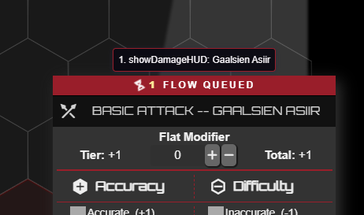
Lancer shows one roll card at a time, and so do these. When several fire at once (an area attack hitting five tokens, or a pile of reactions), they queue instead of overwriting each other, including attack, damage, and stat-roll cards and the interactive cards above. A badge on the active card counts how many are still queued.
Picking targets and areas¶
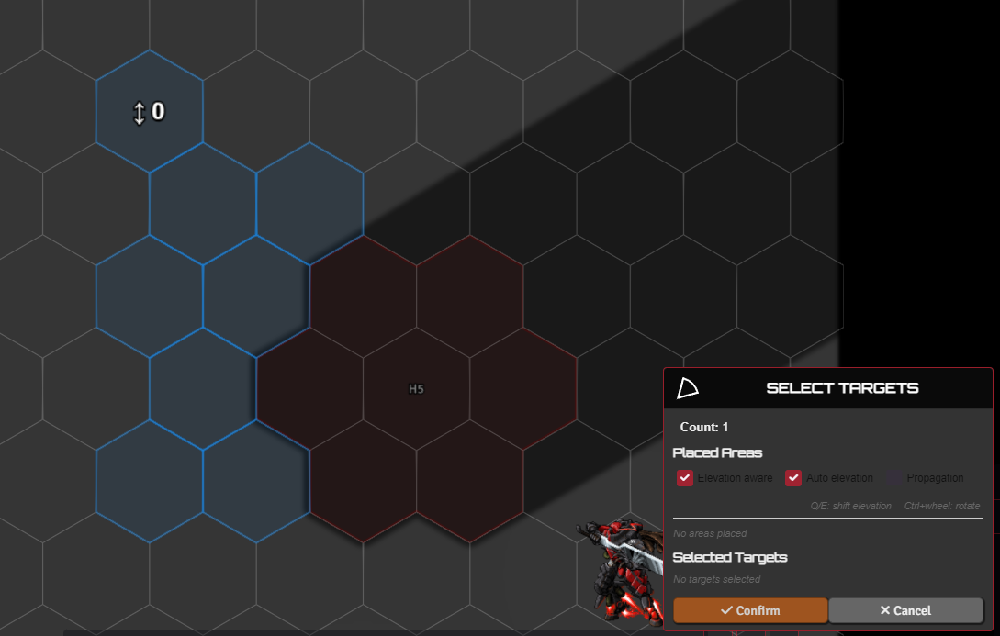
chooseToken highlights the valid tokens in range and asks you to pick one or more, with an optional filter (allies only, for example).
For area effects it switches to blast / cone / line / burst: place the shape on the canvas, Ctrl+wheel to rotate, and toggle elevation-aware, auto-elevation, and propagation (flood-fill that terrain blocks).
pickSingleTargetToggle skips the card: click a token to toggle it as your target.
HASE contest¶
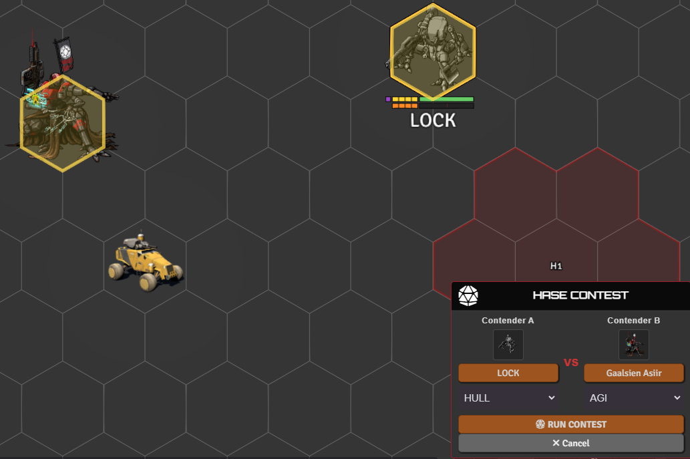
openHaseContestCard sets up a contest between two tokens: pick each contender and its HASE stat, roll both sides, and compare. It's reachable from a token's Contest entry under Skills, and Search, Jockey, Grapple, and Break Free all run through it.
Force check¶
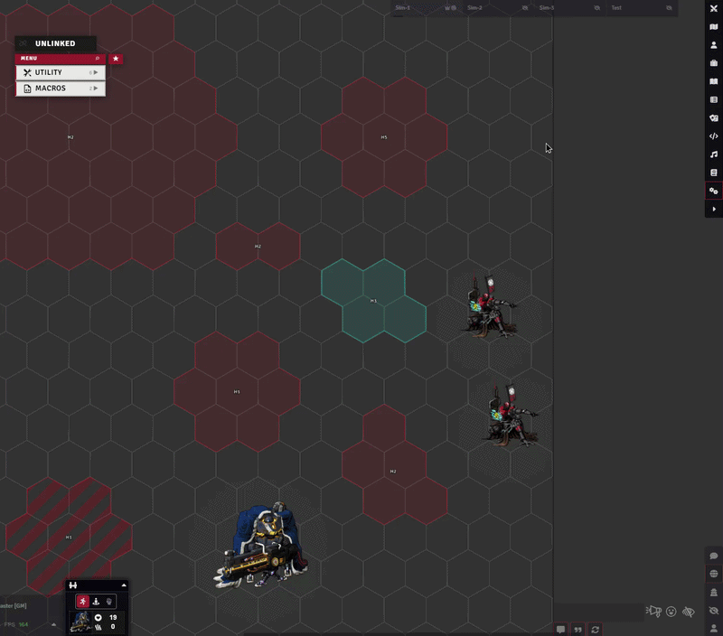
openForceCheckCard sends a HASE check to a batch of tokens: pick the skill, pick the targets like an attack roll, and each token's owner rolls it themselves. Give it a save-vs token and every check becomes a save against that actor's SAVE, pre-targeted in the roller's HUD. It's reachable from a token's Force Check entry under Skills.
Placing zones¶
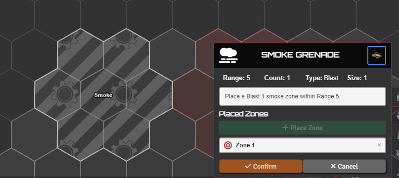
placeZone drops Blast / Burst / Cone / Line zones (through TemplateMacro). A zone can apply status effects to anyone inside, deal damage as a dangerous zone, or mark difficult terrain for the ruler. A zone can also follow a token.
For one-off effects you can skip the API: place a template by hand and attach the behaviour to it with TemplateMacro.
Moving and knocking back tokens¶
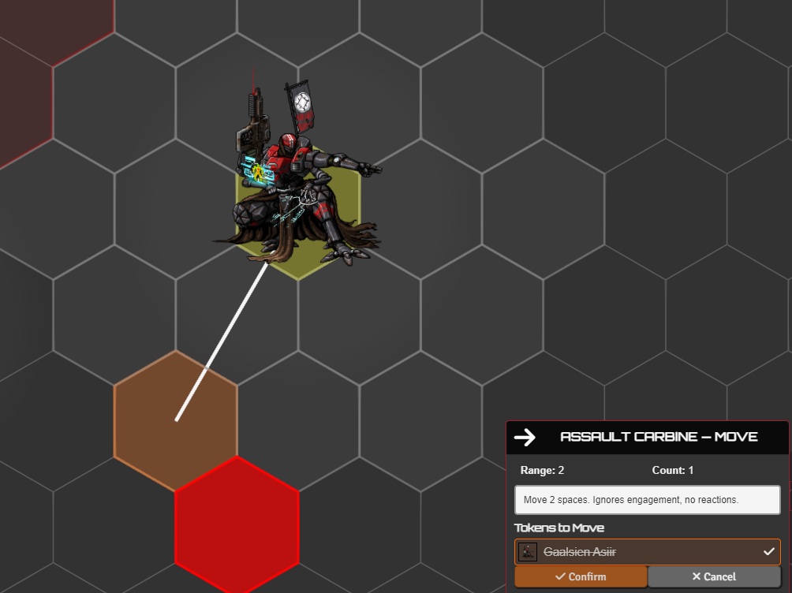
knockBackToken pushes or pulls tokens a set distance, one at a time, snapping to the grid and respecting obstacles. The Knockback checkbox in the damage dialog reads a weapon's Knockback tag and runs this after damage.
placeToken drops tokens at grid-snapped spots, and moveToken moves or teleports a token while drawing a trace from start to destination. The move, knockback, and teleport pickers take Shift+click waypoints for multi-leg paths.
Targeting in attack and check flows¶
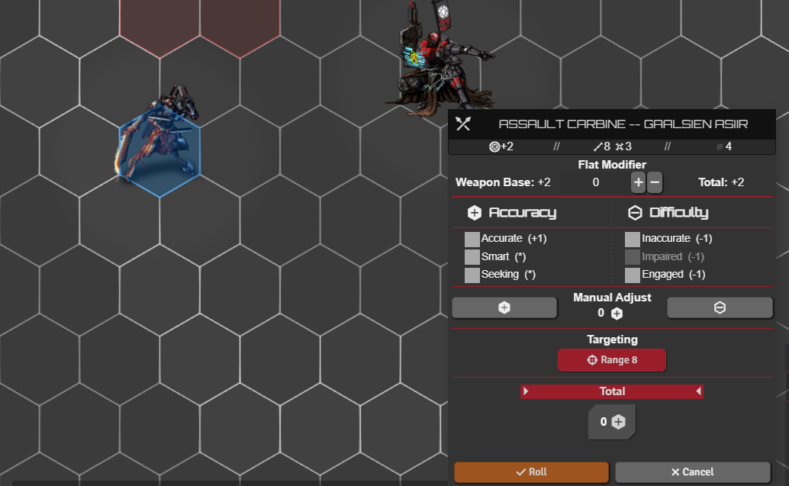
The attack HUD's target and area buttons are covered in Advanced Targeting and Measurement. Two related settings:
- Target on a check - with
statRollTargetingon, a stat or skill roll (HULL / AGI / SYS / ENG) gets the same target button as an attack, using the picked token's save or matching stat as the difficulty. - Range on the attack card -
rangePreviewOnAttackCardshows the attacker's reach on the canvas when the attack card opens, following the Thrown box for a thrown weapon.
Colors¶
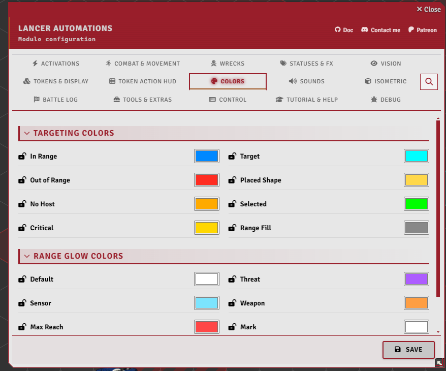
The Colors settings tab lets each player recolor the targeting and range-glow palette, with a button to reset them.
Deployables¶
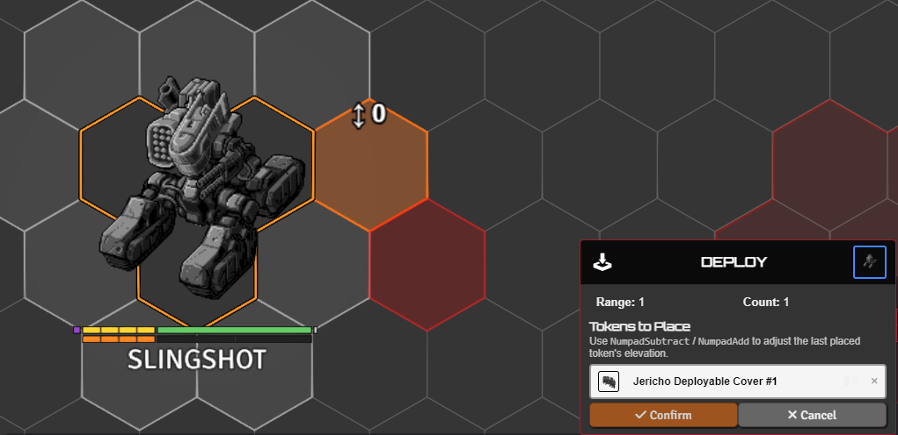
- Place a deployable - drop a drone, turret, or other deployable on the field (drones default to sensor range), and recall it when done. A deploy menu lists an actor's deployables.
- Throw a weapon - place a thrown weapon as a token on the ground (it's disabled in the sheet while it's out there) and pick it back up later.
- Hard cover - spawn a hard-cover token whose HP scales with its size.
- Extra deployables - attach extra deployables to an item that doesn't natively carry one.
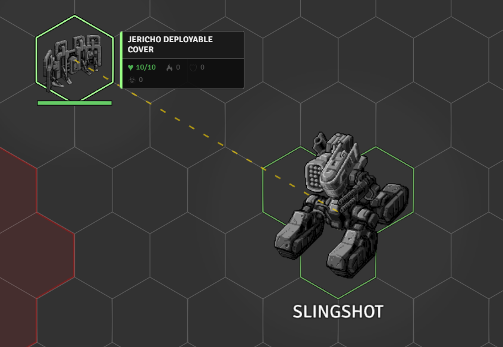
With linkManualDeploy, a deployable you drag onto the scene yourself links to your token and fires its onDeploy, like the deploy menu does. showDeployableLines draws a line from an owner to its deployables on hover.
Delayed appearance / reinforcement is in GAMEPLAY_AUTOMATION.md.
Add Extra¶
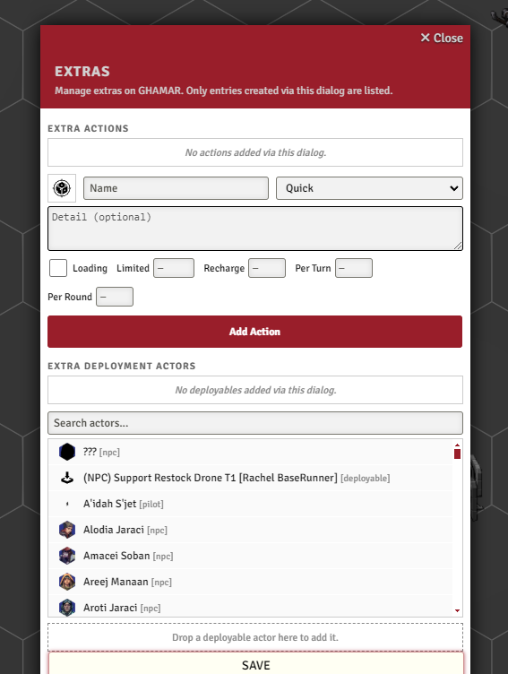
Add Extra attaches custom actions (activation type, plus charges, recharge, and limited / per-turn / per-round uses) and extra deployables to an actor, no code needed. It works on a token's actor, on the prototype actor, or directly on an item - and only lists the entries you create here.
Open it from the Add Extra button on the actor or item sheet header, or from TAH > Utility > Misc > Add Extra. Anything attached to an item is stored on the item and follows it: whoever carries it gets the extras.
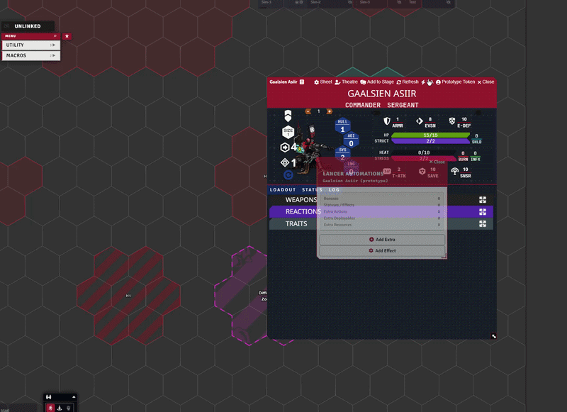
Overlap token picker¶
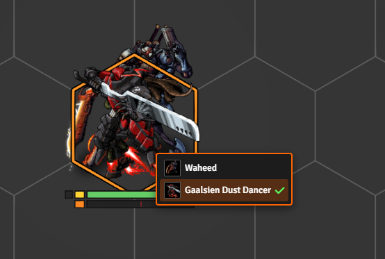
With overlapTokenPicker on, clicking a spot where tokens are stacked shows a small picker so you choose which one.
Share Interactive Tools¶
With displayToolsToOthers on (the default), your in-progress tools, target picking, zone/token placement, and movement traces show to other players as a faded ghost of the same shapes, so the table can follow what you're aiming at. A hidden caster or hidden tokens are never broadcast.